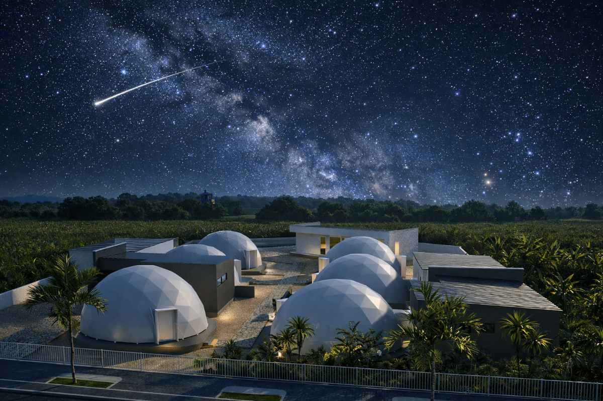
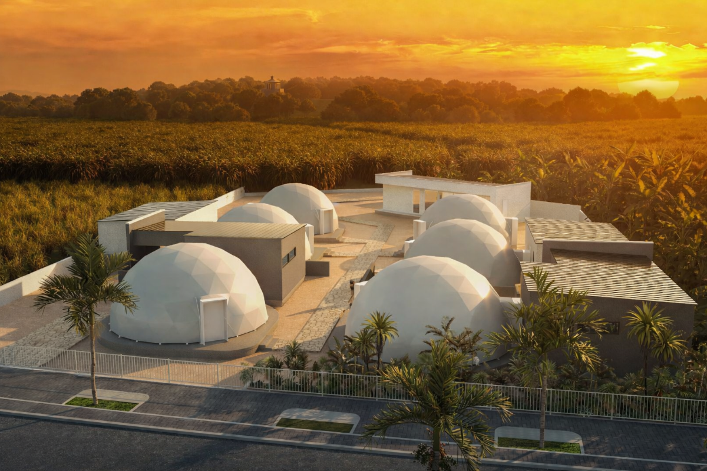
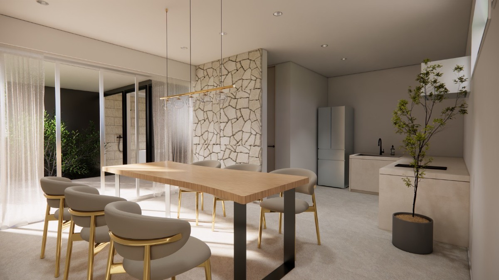
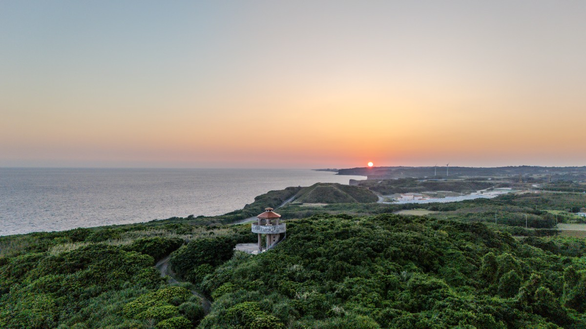

Dome Stayドームステイ
Private Dome Atmosphereプライベートなドーム空間
Rounded forms, island light, and a stay that feels different from a standard hotel room.
丸みのあるドーム空間と島の光を感じる、ホテルとは少し違う滞在。

Opening This Month2026年7月、いよいよオープン
Miyakojima's newest villa glamping stay arrives this July. Official reservations are now live.
宮古島の夕空の下で過ごす、新しいヴィラグランピング。2026年7月のオープンに向け、公式予約ページが公開されました。
The Opening Month Has Arrivedいよいよオープンの月へ
July has arrived, and TOPPURI is moving from preview to a stay travelers can begin planning. Its dome-style setting brings together private spaces, warm interiors, BBQ facilities, and the quiet rhythm of Miyakojima's southern landscape.
7月を迎え、TOPPURIは「まもなくオープン」から、実際の滞在を計画できる場所へ。プライベート感のあるドーム型の空間、あたたかなインテリア、BBQ設備、そして宮古島南部の穏やかな時間がそろいます。

Dome Stayドームステイ
Rounded forms, island light, and a stay that feels different from a standard hotel room.
丸みのあるドーム空間と島の光を感じる、ホテルとは少し違う滞在。

Deluxe Roomデラックスルーム
A relaxed villa-style setting for families, friends, and travelers who want a little more space.
家族や友人との滞在にも心地よい、ゆとりのあるヴィラスタイルの空間。

Suite Previewスイートプレビュー
Warm stone, calm bathing spaces, and a more private way to end the day.
あたたかな石の質感、落ち着いたバス空間、一日の終わりを静かに過ごす贅沢。
Why We Are Watching This Opening注目している理由
TOPPURI feels suited for travelers who want the beauty of Miyakojima without rushing: beach days, sunset drives, quiet dinners, and a place that still feels special when they return at night.
TOPPURIは、宮古島を急がずに楽しみたい旅行者に合う滞在先。ビーチ、夕暮れのドライブ、静かな食事、そして夜に帰る場所まで特別に感じられる空間です。

Images are from TOPPURI's official reservation gallery; some property views are completion visuals.TOPPURI公式予約ページの掲載画像を使用しています。一部は完成イメージです。
Official Reservations Now Live公式予約ページ公開中
View current room information, availability, policies, and children's rates through TOPPURI's official reservation page.
TOPPURI公式予約ページで、客室情報、空室状況、キャンセルポリシー、お子様料金をご確認いただけます。
View Official Reservations 公式予約ページを見る